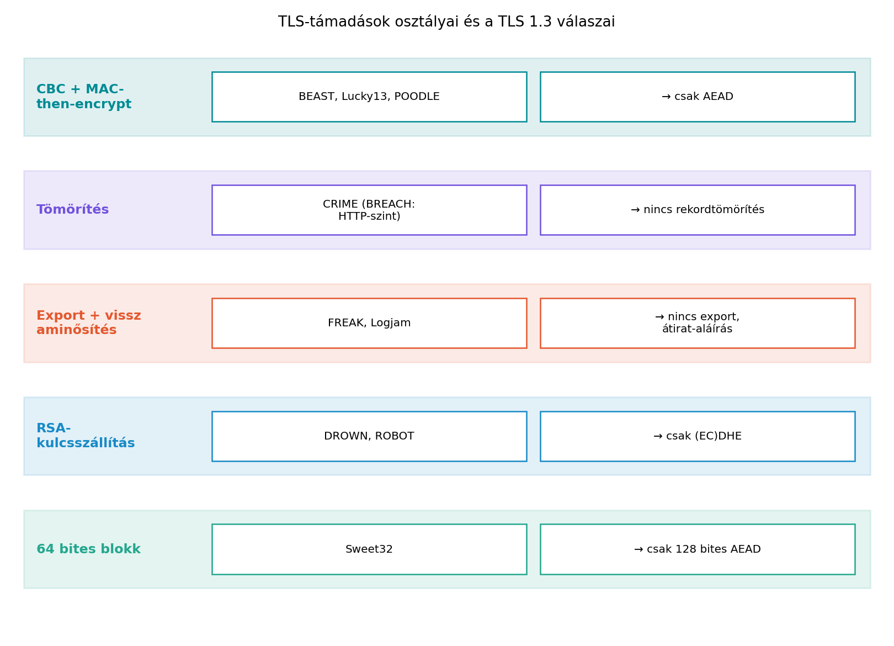

A TLS (Transport Layer Security) a webes biztonság alaprétege: amikor a böngésző HTTPS-en keresztül egy bank vagy egy üzenetküldő szolgáltatás szerverével beszél, a kulcscsere, a hitelesítés és a rekordtitkosítás szinte mindig TLS-ben történik. Éppen ezért a TLS-t több mint két évtizede folyamatosan vizsgálják, és a története tele van olyan támadásokkal, amelyek nem feltétlenül magát az AES-t vagy az RSA-t törik fel, hanem a protokoll rétegei közötti kölcsönhatást, a régi verziókkal való kompatibilitást vagy egy implementáció memóriakezelését használják ki.
Ezt az alfejezetet nem azért olvassuk, hogy megtanuljuk reprodukálni a BEAST vagy a POODLE minden lépését; a cél az, hogy felismerjük a visszatérő mintákat. A támadások nagy része néhány osztályba sorolható: CBC-mód hibái, tömörítési oldalcsatorna, visszaminősítés, RSA-kulcsszállítás, túl kicsi blokkméret. A TLS 1.3 tervezői ezeket a mintákat tudatosan zárták ki: a protokoll csak AEAD módokat enged, nem tömörít, nem támogat export-rejtjeleket, és elhagyta az RSA-kulcsszállítást. Aki ezt a fejezetet megérti, az a modern kriptográfiai protokolltervezés egyik legfontosabb tanulságát viszi magával: a biztonság nem a primitívek erősségén, hanem a primitívek helyes összeállításán és a régi opciók eltávolításán múlik.
A TLS-támadások nem időrendben, hanem gyökérokok szerint érdemes csoportosítani. Az alábbi ábra a főbb támadási osztályokat és a TLS 1.3 tervezési válaszait mutatja.

Az ábra soronként egy támadási osztályt és a rá adott TLS 1.3-választ mutatja: a sor bal oldalán a gyökérok és a hozzá tartozó támadások, a jobb oldalán a TLS 1.3 azon döntése látható, amely az adott osztályt megszünteti. Fontos, hogy a Heartbleed nem szerepel ebben a listában, mert az implementációs hiba, nem protokolltervezési gyökérokkal magyarázható; a TLS 1.3 sem oldja meg automatikusan az ilyen hibákat.
Mielőtt a konkrét támadásokat tárgyalnánk, rögzítsük a leggyakoribb fogalmakat.
Definíció. Padding oracle alatt olyan szolgáltatást értünk, amely egy rejtett szöveg visszafejtése során megkülönböztethető választ ad arra, hogy a kitöltés (padding) helyes-e. A Kitöltés és a padding oracle támadás alfejezetben láttuk, hogy ez a különbség lehetővé teszi a nyílt szöveg bájtonkénti visszafejtését anélkül, hogy a kulcsot ismernénk.
Definíció. Tömörítési oldalcsatorna akkor keletkezik, ha a titkosítás előtt a nyílt szöveget tömörítik, és a rejtett szöveg hossza függ attól, hogy a támadó által választott adat mennyire hasonlít a titkos adathoz. A támadó a hossz különbségéből következtethet a titkos adat tartalmára.
Definíció. Visszaminősítéses támadás (downgrade attack) során a támadó a kézfogás során úgy módosítja a felek által felajánlott algoritmusok vagy paraméterek listáját, hogy a felek gyengébb, feltörhető opciót válasszanak. A TLS 1.3 ezt a downgrade dance kizárásával és a kézfogás átiratának hitelesítésével védekezik.
Definíció. Export-rejtjel alatt a 1990-es évek amerikai exportkorlátozásai miatt szándékosan legyengített kriptográfiai opciókat értjük: például 512 bites RSA-kulcs vagy 512 bites Diffie–Hellman modulus. Ezek a korlátozások már rég megszűntek, de a régi protokollverziókban és konfigurációkban megmaradtak.
Megjegyzés. A fenti definíciók mindegyike a A TLS 1.3 kézfogás alfejezetben tárgyalt modern TLS-kézfogás során is használatos; itt arra koncentrálunk, hogy a régi verziók miért engedték meg ezeket.
A TLS 1.0 a CBC-módú titkosításhoz az előző rekord utolsó rejtett szöveg blokkját használta inicializáló vektorként (IV). Ez az érték azonban a támadó számára előrejelezhető volt, ha ő maga küldte az előző rekordot. A támadó a CBC XOR-láncát kihasználva a nyílt szöveg egy ismert helyén lévő bájtot tudott találgatni: a blokkhatárok manipulálásával az élő HTTPS-munkameneten belül a titkos cookie-kat bájtonként visszafejtette. A gyökérok kriptográfiai: a CBC IV-nek véletlenszerűnek és megjósolhatatlannak kell lennie. A TLS 1.1 ezt javította azzal, hogy minden rekordhoz külön véletlen IV-t rendelt, de a BEAST rámutatott, hogy a protokolltervezésben egy ilyen apró részlet is végzetes lehet. A TLS 1.3 a CBC-módot teljesen elhagyta, így ez a támadási osztály megszűnt.
A TLS régebben lehetővé tette a rekordrétegben a tömörítést. A CRIME
támadás ezt használta ki: a támadó a kérésébe olyan szöveget illesztett,
amely a titkos cookie-val együtt tömörödött. Ha a találgatott karakter
helyes volt, a DEFLATE tömörítő rövidebb kimenetet adott, mert az
ismétlődő mintákat jobban tömörítette. A támadó a rejtett üzenet
hosszának változásából karakterenként kitalálta a cookie-t. A BREACH
ugyanezt az elvet alkalmazta a HTTP-szintű tömörítésre (például a
Content-Encoding: gzip válaszokra), még akkor is, ha a
TLS-szintű tömörítést már letiltották. A gyökérok szintén kriptográfiai:
a titkosítás előtti tömörítés a nyílt szöveg tartalmától függő
hosszúságot hoz létre, ami megsérti a szemantikai biztonságot. A TLS 1.3
egyáltalán nem támogat tömörítést a rekordrétegben, és a modern webes
irányelvek a HTTP-szintű tömörítést is korlátozzák érzékeny
adatoknál.
A korai TLS 1.0-implementációk hibás kitöltésnél azonnal, MAC-számítás nélkül tértek vissza, így a hibás kitöltés gyorsabb hibát adott, mint a hibás MAC (Vaudenay- és Canvel-féle időzítéses támadás, 2002–2003). A TLS 1.1/1.2 ezért előírta, hogy a MAC-et hibás kitöltésnél is ki kell számítani. A Lucky13 (2013) megmutatta, hogy ez sem elég: a MAC-számítás ideje a kitöltés hosszától függően egy-egy SHA-1/SHA-256 tömörítőblokkal eltér, és ez a kis különbség sok méréssel kimérhető. A TLS 1.2-es és DTLS-implementációk is érintettek voltak; a javítás a valóban konstans idejű MAC-ellenőrzés lett (ellenőrzési igény: a pontos implementációs részletek). A padding oracle itt időzítési csatornaként jelenik meg: a támadó a válaszidő finom különbségéből fejtette vissza a nyílt szöveget. A gyökérok a MAC-then-encrypt sorrend és a különböző hibautak időbeli szétválása. A TLS 1.3 ezt a problémát az AEAD (hitelesített titkosítás) kizárólagos használatával szünteti meg: az AES-GCM vagy a ChaCha20-Poly1305 egyetlen műveletben végzi a titkosítást és a hitelesítést, így nincs külön padding- és MAC-ellenőrzés.
Az SSL 3.0 CBC-módú rekordjainál a kitöltés utolsó bájtját ellenőrizték, de a többi kitöltő bájt tartalmát nem. Ha a szerver elfogadta a módosított rekordot, a támadó tudta, hogy a titkos bájt egy adott érték. Ezzel bájtonként visszafejtette a cookie-t. A támadó a célblokkot az utolsó, teljes kitöltő blokk helyére másolja; ha a szerver elfogadja (kb. 1/256 eséllyel), az utolsó bájt visszafejtett értéke a kitöltés hossza, és ebből a célbájt kiszámítható. A POODLE-t a böngészők visszalépési gyakorlata (“downgrade dance”) tette veszélyessé: egy megszakított TLS-kapcsolat után a kliens SSL 3.0-val próbálkozott újra. Erre válaszul született a TLS_FALLBACK_SCSV jelzés (RFC 7507). A POODLE gyakorlatilag arra kényszerítette a böngészőket és szervereket, hogy tiltsák le az SSL 3.0-t. A TLS 1.3 implementációknak tilos SSL 3.0-t tárgyalni (RFC 8446, RFC 7568 – ellenőrzési igény).
A Heartbleed az OpenSSL TLS/DTLS Heartbeat kiterjesztésének hibája volt: a Heartbeat üzenet hosszmezőjét a szerver nem ellenőrizte, és a kliens által megadott hosszúságú memóriaterületet olvasott vissza. A támadó így a szerver memóriájából kiszivárogtathatott titkos kulcsokat, munkamenetkulcsokat, jelszavakat. Fontos, hogy ez nem kriptográfiai gyökérok: a protokoll és az algoritmusok hibátlanok voltak, a hiba az implementáció memóriakezelésében rejlett. A TLS 1.3 sem véd automatikusan az ilyen hibáktól; a tanulság az, hogy a biztonságos protokoll mellett is szükség van gondos implementációra, tesztelésre és független auditra. Ezt a tanulságot a API-misuse: a leggyakoribb kriptográfiai programozási hibák alfejezetben is látjuk majd.
A FREAK támadás a régi, export-korlátozás miatt 512 bites RSA-kulcsot
használó TLS-konfigurációkat támadta. A támadó a kézfogás során a kliens
által felajánlott erős RSA opciókat egy export-RSA opcióra cserélte, a
szerver pedig elfogadta azt. Ezután a támadó a 512 bites RSA-modulust
faktorizálta, és megszerezte a premaster secretet. A Logjam hasonló
elven működött, de a Diffie–Hellman kulcscserénél: a támadó a kliens
által kért erős DH csoportot egy 512 bites export csoportra cserélte, és
a diszkrét logaritmus előre kiszámított táblákkal megoldható volt.
Mindkét támadásnál a támadó valós időben (Logjam: előszámítással, FREAK:
a szerver által hosszan újrahasznált 512 bites kulcs faktorizálásával)
megszerezte a master secretet, ezért a Finished-et is
hamisítani tudta: a TLS 1.2 Finished-je csak addig véd,
amíg a kulcscsere erős. Logjamnél a szerver
ServerKeyExchange-aláírása nem fedte le a választott
rejtjelkészletet; FREAK-nél a kliensek implementációs hibából fogadták
el a nem kért export-RSA-kulcsot. A gyökérok az export-rejtjelek és a
gyenge paraméterek visszaminősíthetősége. A TLS 1.3 válasza: nincsenek
export- és 512 bites csoportok, és a szerver a
CertificateVerify-ban a teljes átiratot (benne a
ClientHello ajánlatait és a választott paramétereket)
aláírja, így a paramétercserét az aláírás leleplezi, még akkor is, ha a
támadó valahogyan a kulcscserét megtörné. Továbbvitt
eredmény. A visszaminősítéses támadások általános védelmét a Protokollszintű hibák: visszaminősítés,
bemenetellenőrzés, kontextuskötés alfejezetben részletesen
tárgyaljuk.
A DROWN egy olyan SSLv2-t is kiszolgáló szervert használt Bleichenbacher-oracle-ként, amely ugyanazt az RSA-kulcsot használta, mint a TLS-szerver; így egy rögzített TLS-kapcsolat RSA-val titkosított premaster secretjét, és ezzel a munkamenetkulcsokat lehetett visszafejteni (a privát kulcsot nem). A ROBOT 2017-ben azt mutatta meg, hogy a Bleichenbacher-támadás még számos népszerű szerveren működött: a szerverek a rossz PKCS#1 v1.5 kitöltésre megkülönböztethető hibát adtak, és a támadó intervallumszűkítéssel visszafejtette a rögzített premaster secretet (vagy a szerver kulcsával aláírást hamisított). A gyökérok kriptográfiai: az RSA-kulcsszállítás a PKCS#1 v1.5 kitöltést használta, amely nem nyújt CCA-biztonságot, és a szerverek nem egységesen kezelték a hibákat. A TLS 1.3 ezt a problémát gyökeresen oldja meg: az RSA-kulcsszállítást teljesen elhagyta, az RSA-t kizárólag digitális aláírásra használja. A kulcscsere Diffie–Hellman vagy elliptikus görbés Diffie–Hellman alapon, KEM/DEM szerkezetben történik. Továbbvitt eredmény. A Bleichenbacher-támadás részletes mechanizmusát a Az OAEP és a Bleichenbacher-támadás alfejezetben tárgyaltuk; itt a ROBOT azt mutatja, hogy a hiba a gyakorlatban is megmaradt, ezért a TLS 1.3 döntése az RSA-kulcsszállítás elhagyása.
A Sweet32 támadás a TLS-ben még engedélyezett 3DES blokkrejtjelet támadta. A 3DES 64 bites blokkméretet használ; a születésnapi paradoxon miatt körülbelül blokk titkosítása után már észrevehető valószínűséggel fordul elő két azonos rejtett szöveg blokk, ami lehetővé teszi a nyílt szöveg egyes bájtjainak kiszivárgását. A támadó sok, azonos kulccsal titkosított rekordot gyűjtött, és a blokkütközésekből következtetett. A gyökérok a túl kicsi blokkméret: a 64 bites blokk nem elegendő nagy forgalomhoz. A TLS 1.3 a 3DES-t elhagyta, és csak 128 bites blokkméretű AEAD módokat (AES-GCM, ChaCha20-Poly1305) enged.
Tegyük fel, hogy egy webalkalmazás a sessionid=SECRET123
cookie-t használja. A CRIME a kérés TLS-szintű
tömörítését használja ki: a böngésző a támadó által választott URL-t és
az automatikusan hozzáadott Cookie fejlécet egy rekordban
tömöríti, a támadó pedig a hálózaton a kliens rekordjának hosszát méri.
A támadó (például a saját oldalán futó szkriptből) olyan URL-re
kényszeríti a böngészőt, amely a Cookie: sessionid=SECRET12
szöveget és egy találgatott karaktert tartalmaz:
GET /?q=Cookie: sessionid=SECRET12A HTTP/1.1
Host: example.com
Cookie: sessionid=SECRET123Helyes találgatásnál (3) az URL-ben szereplő szöveg a
fejlécbeli cookie-val teljesen egyezik, ezért a DEFLATE egy hosszabb
visszahivatkozással kódolja, és a tömörített kérés rövidebb:
GET /?q=Cookie: sessionid=SECRET123 HTTP/1.1
Host: example.com
Cookie: sessionid=SECRET123A támadó így karakterenként haladva visszafejti a teljes cookie-t. (A szerver oldali válasz tömörítését kihasználó változat a BREACH, lásd fent.)
Az alábbi ábra a hosszorákulumot valós (Python zlib-bel számított,
nyers DEFLATE) hosszakkal mutatja egy rövid kérésen, amelynek URL-jébe a
támadó a Cookie: sessionid=SECRET12 szöveget és egy
találgatott karaktert illeszt, a fejlécében pedig a valódi
Cookie: sessionid=SECRET123 áll. Helyes találgatásnál a
fejlécbeli cookie egy karakterrel hosszabb visszahivatkozással
kódolható, ezért a 3 találgatás 97 bájtos, a többi 35
jelölt 98 bájtos tömörített kérést ad. Az interaktív változat
karakterenként végigjátssza a teljes cookie kiolvasását (a 3.
karakternél valódi döntetlen is adódik, ezt kétkérésű trükkel kell
feloldani), és saját titokra is kipróbálható egy egyszerű
LZ77-becsléssel.
A hosszkülönbség nagyon kicsi (itt 1 bájt; a számított érték Python zlib-bel, nem hálózati mérés), ezért a valós támadás kiegészítő trükköket (kitöltés, kétkérésű összehasonlítás) használ. A támadás célja a cookie visszafejtése; a védekezés a tömörítés letiltása vagy legalább a titkos adatok és a támadó által befolyásolható adatok együttes tömörítésének elkerülése.
A fenti támadások mindegyike valós károkat okozott, és kikényszerítette a böngészők, operációs rendszerek és szerverek frissítését. A POODLE 2014 őszén arra kényszerítette a Google-t, a Mozillát és az Apple-t, hogy néhány hónapon belül letiltsák az SSL 3.0-t a böngészőikben. A FREAK és Logjam után a böngészők minimális kulcsméretet írtak elő, a szerverek pedig eltávolították az export-rejtjeleket. A DROWN nyomán az SSLv2-t mindenhol kikapcsolták, a ROBOT után pedig a szerverek az RSA-kulcsszállítást is letiltották. A TLS 1.0 és 1.1 elavulását (RFC 8996, ellenőrzési igény) a CBC-konstrukciók, az MD5/SHA-1 kézfogás-hash és az AEAD hiánya indokolta; a modern szerverek ma csak TLS 1.2-t és TLS 1.3-at hirdetnek.
A TLS 1.3 (RFC 8446) 2018-as véglegesítése óta a fenti támadási osztályok egyszerűen nem alkalmazhatók, mert a protokoll nem tartalmazza azokat a mechanizmusokat, amelyek a gyökérokokat okozták. A gyakorlati átállás azonban lassú volt: sok szervezet még évekig támogatta a régi verziókat a régi kliensek miatt. A modern konfigurációs irányelvek (például a Mozilla SSL Configuration Generator) ezért ma már alapértelmezésben letiltják a TLS 1.0-t, 1.1-et, az SSL 3.0-t és a CBC-módokat. A tanulság az, hogy a kompatibilitás és a biztonság közötti feszültség a támadók egyik legnagyobb szövetségese; a TLS 1.3 ezt a feszültséget azzal oldja fel, hogy a régi opciókat egyszerűen kihagyja a szabványból.
Azt hinni, hogy a protokollfrissítés minden hibát megold. A Heartbleed megmutatta, hogy az implementációs hibák a protokollváltás után is megmaradnak. A TLS 1.3 használata mellett is szükséges a könyvtárak frissítése, az auditálás és a tesztelés.
A régi protokollok engedélyezése „kompatibilitási okokból”. Ha a szerver támogatja a TLS 1.0-t vagy az SSL 3.0-t, a támadó visszaminősítést hajthat végre, még akkor is, ha a kliens alapértelmezésben erős opciót kér. A megoldás a régi verziók letiltása a szerveren.
A rejtett szöveg hosszának figyelmen kívül hagyása. A CRIME/BREACH óta tudjuk, hogy a hossz maga is oldalcsatorna. Ha webalkalmazás érzékeny adatokat tömörít, a TLS 1.3 sem véd, mert a tömörítés a HTTP-szinten történik.
A hibafajták megkülönböztetése a szerveroldalon. A Lucky13 tanulsága, hogy a padding hibát és a MAC hibát azonos időben és azonos hibaüzenettel kell kezelni. Modern AEAD módoknál ez a hiba nem létezik, de a régi könyvtárakban még előfordulhat.
A 64 bites blokkrejtjelek használata nagy forgalmú rendszerekben. A 3DES-t a Sweet32 óta nem szabad használni; 128 bites blokkméret alatt mindig ellenőrizni kell, hogy a forgalom mennyisége nem éri el a születésnapi határt.
A válaszok a lenti Megoldások szakasz „Önellenőrzés – válaszok” részében találhatók.
1. feladat (A). Sorold fel a fejezetben tárgyalt támadásokat, és mindegyiknél jelöld, hogy a gyökérok kriptográfiai (protokolltervezési) vagy implementációs hiba volt-e.
2. feladat (A). Magyarázd el, miért nem véd a TLS 1.3 a HTTP-szintű tömörítés (BREACH) ellen, ha a webalkalmazás a válaszokat tömöríti.
3. feladat (B). Tervezz egy egyszerű
visszaminősítéses támadást: a kliens és a szerver is támogatja a TLS
1.2-t és az SSL 3.0-t, a böngésző pedig hiba esetén új kapcsolatban
alacsonyabb verzióval próbálkozik (fallback). A támadó a hálózaton hibát
tud injektálni. Írd le a támadás lépéseit, és magyarázd el, mi védi ki a
TLS_FALLBACK_SCSV, illetve a TLS 1.3 DOWNGRD-jelzője, és
miért nem a ClientHello közvetlen módosításával dolgozik a
támadó. (Ez a feladat készíti elő a Protokollszintű hibák: visszaminősítés,
bemenetellenőrzés, kontextuskötés alfejezetet.)
4. feladat (B). A Sweet32 támadás a 3DES 64 bites blokkméretét használja ki. A születésnapi paradoxon alapján körülbelül hány blokk titkosítása után lesz 50% a valószínűsége, hogy két azonos rejtett szöveg blokk ütközik? Használd a közelítést, ahol a lehetséges blokkok száma, a titkosított blokkok száma. Adj választ bitszinten is: hány bájt adat ez körülbelül?
5. feladat (C). Bizonyítsd be informálisan, hogy ha egy CBC-módú rekord feldolgozása során a szerver a hibás kitöltést gyorsabban jelzi, mint a hibás MAC-et, akkor ez a különbség padding oracle-t hoz létre. Miért szünteti meg ezt az AEAD használata?
6. feladat (D). Válassz egy nyilvános
TLS-konfiguráció-ellenőrző eszközt (például a testssl.sh
parancsot), és futtasd le egy általad üzemeltetett, laboratóriumi
szerveren. Elemezd a kimenetet: támogatja-e a szerver az SSL 3.0-t, TLS
1.0-t, 1.1-et, 3DES-t, RSA-kulcsszállítást? Írd le, hogy a talált gyenge
opciók melyik fejezetbeli támadásnak tennék ki a szervert, és milyen
konfigurációs változtatást javasolnál. (Csak saját, helyben
futtatott szerveren dolgozz; éles rendszer ellen ne futtass
vizsgálatot.)
Content-Encoding: gzip) használja; a TLS-szintű tömörítés
letiltása nem szünteti meg ezt a csatornát.Finished-et is hamisítani tudta;
a TLS 1.2 Finished-je csak erős kulcscserénél véd.1. feladat (A). A támadások és gyökérokok:
2. feladat (A). A TLS 1.3 a rekordrétegben nem
tömörít, de ha a HTTP-választ a szerver a TLS-réteg alatt tömöríti
(például Content-Encoding: gzip), akkor a rejtett szöveg
hossza továbbra is függ a támadó által befolyásolt adat és a titkos
cookie hasonlóságától. A BREACH ezt a HTTP-szintű tömörítést használja
ki, ezért a TLS 1.3 önmagában nem véd ellene; a webalkalmazásnak kell
letiltania a tömörítést érzékeny adatoknál, vagy a támadó által
befolyásolható részeket elkülöníteni.
3. feladat (B). A támadás lépései:
Finished-del létrejön, és
POODLE-lel támadható.A ClientHello közvetlen módosítását az SSL 3.0/TLS 1.2
Finished is észlelné, ha a kulcscsere erős, ezért a valós
támadás a kliens saját visszalépésére épül. Védelem: a
TLS_FALLBACK_SCSV (RFC 7507) jelzi a szervernek, hogy a
ClientHello visszalépés eredménye, és az ezt ismerő szerver
megszakítja a kapcsolatot. TLS 1.3-ban a szerver TLS 1.2 vagy régebbi
verzió tárgyalásakor a ServerHello.random végére
DOWNGRD-jelzőt ír, amelyet a TLS 1.2
ServerKeyExchange-aláírása véd, és a TLS 1.3-képes kliens
elutasít. Alapelv: a régi verziót a kliensben és a szerverben is le kell
tiltani. A kézfogás-átirat hitelesítését a A TLS
1.3 kézfogás alfejezet tárgyalja, a protokollszintű
bemenetellenőrzés általános tanulságait pedig a Protokollszintű hibák: visszaminősítés,
bemenetellenőrzés, kontextuskötés alfejezet.
4. feladat (B). A születésnapi paradoxon szerint a blokk után bekövetkező ütközés valószínűsége:
ahol a lehetséges blokkok száma. 64 bites blokknál . 50%-os valószínűséghez:
Átrendezve:
Így
Tehát körülbelül blokk titkosítása után 50% az ütközés valószínűsége. Ez 64 bites blokk (8 bájt) esetén bájt, azaz 32 GiB adat. Ezért a 3DES nem biztonságos nagy forgalmú rendszerekben.
5. feladat (C). A CBC-módú rekordnál a szerver először a kitöltést ellenőrzi, majd a MAC-et. Ha a kitöltés hibás, a szerver azonnal hibát jelez; ha a kitöltés helyes, de a MAC hibás, a szerver tovább dolgozik, és később jelez hibát. Ez az időzítési különbség egy padding oracle: a támadó mérheti, hogy a szerver melyik hibát adja, és ebből következtethet a visszafejtett blokk tartalmára. Az AEAD (például AES-GCM) ezt azzal szünteti meg, hogy a titkosítás és a hitelesítés egyetlen műveletben történik: nincs külön kitöltés, nincs külön MAC-ellenőrzés, így nincs időzítési csatorna sem. A szerver a rejtett szöveg átadásakor csak a hitelesítő címkét ellenőrzi, és minden hibát azonos módon kezel.
6. feladat (D). A testssl.sh parancsot
a saját laboratóriumi szerveren futtatva a kimenetből kiolvasható, hogy
a szerver támogatja-e az SSL 3.0-t, TLS 1.0-t, 1.1-et, 3DES-t,
RSA-kulcsszállítást stb. Ha a szerver például támogatja az SSL 3.0-t,
akkor a POODLE támadásnak lehet kitéve; ha 3DES-t, akkor a Sweet32-nek;
ha RSA-kulcsszállítást, akkor a DROWN/ROBOT-nak. A javaslat: tiltsuk le
az SSL 3.0-t, TLS 1.0-t, 1.1-et, a 3DES-t, az export-rejtjeleket és az
RSA-kulcsszállítást; engedélyezzük csak a TLS 1.2-t és TLS 1.3-at AEAD
módokkal. Fontos, hogy a vizsgálatot csak saját, erre a célra
létrehozott szerveren végezzük.
A TLS/SSL támadások története azt tanítja, hogy a protokollok biztonsága a tervezési döntések apró részletein múlik. A BEAST az előrejelezhető CBC IV hibáját, a CRIME/BREACH a tömörítési oldalcsatornát, a Lucky13 és POODLE a MAC-then-encrypt és a CBC-kitöltés hibáit használta ki. A Heartbleed rámutatott, hogy az implementációs hibák a protokollváltástól függetlenül is súlyosak. A FREAK, Logjam, DROWN, ROBOT mind a visszaminősítés és a régi RSA-kulcsszállítás gyengeségeit aknázták ki. A Sweet32 a 64 bites blokkméret születésnapi határát mutatta meg. A TLS 1.3 ezeket a támadási osztályokat úgy zárja ki, hogy kizárólag AEAD módokat használ, nem tömörít, elhagyja az export-rejtjeleket és az RSA-kulcsszállítást, valamint a kézfogás átiratának hitelesítésével megakadályozza a visszaminősítést. Továbbvitt eredmények: a visszaminősítéses támadások általános védelmét a Protokollszintű hibák: visszaminősítés, bemenetellenőrzés, kontextuskötés alfejezetben, a gyakori programozási hibákat a API-misuse: a leggyakoribb kriptográfiai programozási hibák alfejezetben, a döntési fát pedig a A kriptográfia fogalmi térképe és döntési fája alfejezetben használjuk.
Az alfejezet a klasszikus TLS-támadások ismertetésére épül: BEAST (2011), CRIME (2012), BREACH (2013), Lucky13 (2013), POODLE (2014), Heartbleed (2014), FREAK (2015), Logjam (2015), DROWN (2016), Sweet32 (2016), ROBOT (2017). Az évszámok és a pontos verziók tekintetében a forrásokat (például az RFC 8446 TLS 1.3 specifikációt, a Mozilla SSL Configuration Generator ajánlásait) érdemes ellenőrizni; a támadások részletes leírása a hivatkozott alfejezetekben található. A Heartbleed és a ROBOT kapcsán a pontos CVE-számok és az érintett verziók felsorolását szándékosan elkerültük, mert ezeket csak ellenőrzött forrásból szabad megadni. Az itt közölt számítások (például a Sweet32 születésnapi határa) matematikailag ellenőrzöttek.